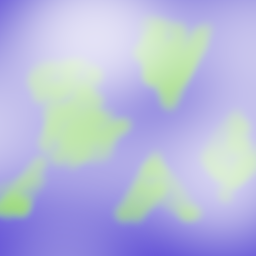

CSCI-510: Final Exam Image
Your browser does not support the HTML5 canvas element.
Controls
p
Ptolemy branded Geocentrism
c
Copernicus's homemade heliocentrism
m
Chad lunarcentrism
-
Slow Time Down
+
Speed Time Up